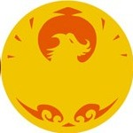

Phoenix Clan

With regard to the subject of shugenja, the consensus of an entire Empire is that the Phoenix possess both the largest number of shugenja and most powerful of them. The descendants of the Tribe of Isawa and those who have sworn allegiance to them command mystical power unlike anything seen in the other Clans, and the followers of the Kami Shiba have sworn to protect them for all time, no matter the cost.
Families
Asako
Trait: +1 Awareness
The quiet, reclusive Asako are a very monastic family, living scholarly and ascetic lives more befitting the Brotherhood of Shinsei than a family of samurai. They comprise the majority of the Phoenix Clan's courtiers, and the entirety of the mysterious Henshin monks. Asako are contemplative and inquisitive, but generally without ambition other than to serve and learn.
Isawa
Trait: +1 Stamina
The Isawa truly rule the Phoenix Clan, despite the presence of a Shiba Clan Champion. They are unquestionably the most knowledgeable, most powerful, and most numerous shugenja family in the Empire. Unfortunately, this has made them arrogant as well, and many Isawa constantly struggle against their own shortcomings.
Shiba
Trait: +1 Awareness
The Shiba are among the most scholarly and least aggressive of all bushi families. They serve the Clan and the Isawa without complaint or consideration for themselves. Although they prefer peace and compassion, the Shiba will not retreat from a battle once the Phoenix have committed themselves to an engagement.
Schools
Asako Loremaster
The Asako are monastic and scholarly by nature, and nowhere is this more evident than in the courtier tradition they maintain on behalf of the Phoenix Clan. Their training consists of extensive studies in a large number of subjects, some of which may be chosen by the students themselves. A broad knowledge base gives the Asako a frame of reference from which to examine any new data or situation, and allows them great insight into the social situation of court.
The Loremasters specialize in scholarly pursuits, and use those as a means of succeeding in social situations. Asako courtiers use Lore Skills to augment their Social Skills, gaining influence and success in court through their learned natures.
Keywords:Courtier
Benefit: +1 Intelligence
Skills: Sincerity, Courtier, Etiquette, Bunpitsu, any one High or Lore Skill, any two Lore Skills
Honor: 6.5
Outfit: Sensible Clothing, Wakizashi, Bo, Calligraphy Set, Traveling Pack, 3 koku
Techniques:
| Rank | Name | Flavor | Rule |
|---|---|---|---|
| 1 | Temple of the Soul | The Asako are historians and scholars, and their studies are broader than those of any others in the Empire. They pride themselves on the depth of their knowledge in all fields of intellectual endeavor. They also share the Phoenix devotion to peace and civility, relying on genteel discourse to resolve problems. | Gain +5 to Lore rolls. You lose no Honor for using Lore Skills. |
| 2 | Isawa's Lesson | Through years of study, observation, and discourse with the Isawa, Loremasters acquire a sophisticated understanding of magical theory. While they lack the breadth and power of a true shugenja, an accomplished Loremaster can reproduce a handful of carefully studied invocations, applying scholarship where others rely upon innate talent. | Once per day as a Simple Action, use the appropriate Lore skill against TN 20 to reveal all base stats of a specific creature, reduce its Armor by 5 on the next strike against it, and prevent it from using Void to reduce damage. Each effect applies to each creature once. |
| 3 | Voice of the Universe | As the Asako's training progresses, his recall of obscure historical facts allows him to provide useful contemporary advice to his allies. | Gain Advantage: Ango (Phoenix). After an hour of conversation, roll Lore: History / Intelligence at TN 25. On success, an ally adds your Lore: History rank to Social Skill rolls for 24 hours. You may increase the TN by 10 to affect one additional participating ally. |
| 4 | Knowledge Guides the Hand | Every conflict is shaped by principles that can be studied, understood, and mastered. Years spent examining military treatises, dueling records, and the lessons of history allow the Loremaster to anticipate an opponent's actions and exploit weaknesses that others never perceive. | You may make a double attack with a Wakizashi and Bo. |
| 5 | Wisdom of the Ages | The libraries of the Phoenix preserve the lessons of countless generations, and the greatest Asako become living extensions of that tradition. Having devoted their lives to study and contemplation, they perceive truths that lie beyond status, fame, and worldly acclaim. Their words carry the weight of history itself, while their guidance grants others the clarity and resolve needed to overcome challenges that would otherwise seem insurmountable. | Add your Lore rank for a specific clan to contested Etiquette or Courtier rolls against that clan. Someone accepting an Iaijutsu challenge on your behalf may add your History rank to one roll. Once per day, roll Lore: Elements against TN 20 to give one person Magic Resistance +5 for 5 rounds; increase the TN by 5 to target one extra person. |
Isawa Shugenja
The Isawa are the greatest shugenja in the Empire, and while the family would never claim this openly, the behavior of those who have trained in their prestigious School bears this out. Fortunately, most others recognize the truth of it as well, and accept it with varying degrees of resentment or resignation. The Isawa are nearly twice as a large as the next largest shugenja family in the Empire. Indeed, there are so many among their ranks that they are nearly the size of a typical bushi family. That so many among them are born with the gift to speak with the kami has allowed teh family to diversify into numerous areas of magical specialization, but the core of their power has always been the Isawa Shugenja School. It is literally the oldest School of its kind in Rokugan, and the Isawa have been struggling to master the secrets of the universe for more than a thousand years.
The Isawa Shugenja has no particular specialization, but instead are constructed around the premise that being the finest at spell-casting in general. their ability to choose an Affinity without a corresponding Deficiency, and their unrestricted +5 TR on all Spell Casting Rolls of their Affinity, make them extremely competent and the equal of virtually any other shugenja character.
Keywords: Shugenja
Benefit: +1 Intelligence
Skills: Calligraphy (Cipher), Lore: Theology, any one Lore Skill, Medicine, Meditation, Spellcraft, any one High Skill
Honor: 4.5
Outfit: Robes, Wakizashi, any 1 weapon, Scroll Satchel, Traveling Pack, 5 koku
Affinity/Deficiency: Isawa shugenja may select any element of their choosing, including Void, as their Affinity. They do not have a Deficiency.
Spells: Sense, Commune, Summon, 3 spells of any one element, 2 spells of any other element, 1 spell of a third element, and 1 spell of a fourth element.
Techniques: Isawa's Gift - There are no greater masters of the shugenja tradition than those among the Isawa.
- You gain a +5 TR on all Spell Casting Rolls for spells of the element which you chose as your Affinity.
Shiba Bushi
The Shiba Bushi are well known as a relatively peaceful group, at least as bushi are concerned. Their training emphasizes a number of non-martial skills in addition to the traditional weapons training, which has led to a reputation as warrior-scholars in some circles. A Shiba bushi considers all options before committing to combat, searching for any possible alternative other than the loss of life. If those a Shiba protects are threatened, however, or if combat is an inevitability, he attacks swiftly and without reservation, committing himself fully to the act until it is done. Those who mistake the desire of a Shiba bushi to preserve life for an inability to take it are woefully unprepared to face them on the battlefield.
The Shiba Techniques optimize the use of Void Points and specialize in the protection of others, allowing Shiba bushi to more than adequately fill their common role as yojimbo. They also possess an affinity for the use of polearms, and can excel at dueling if properly tailored.
Keywords: Bushi
Benefit: +1 Agility
Skills: Defense, Kenjutsu, Kyujutsu, Meditation (Void Recovery), Polearms, Theology, any one Bugei or High Skill
Honor: 5.5
Outfit: Light Armor, Sturdy Clothing, Daisho, any 1 weapon, Traveling Pack, 5 koku
Techniques:
| Rank | Name | Flavor | Rule |
|---|---|---|---|
| 1 | The Way of the Phoenix | Shiba bushi move through battle as the Void moves through all the elements. | When spending a Void Point to gain +1k1 on a roll, you may choose to spend 2 Void Points (to gain +2k2) on the roll instead. You may Guard as a Free Action; however, if you do so, your target only adds +5 to his Armor TN instead of +10. |
| 2 | Dancing With the Elements | Shiba bushi become attuned to the shugenja they protect, aiding their spells and deterring those of their enemies. | When you assume your Stance for the Round, you may choose a target within 30'. Whenever your target casts or is the target of a spell, you may choose to increase or decrease the TN of the spell by 5. Additionally, whenever you are the target of a spell, you may immediately choose to increase or decrease the TN of the spell by 5. |
| 3 | One With the Void | In battle, the Shiba can find his place in the world. | This Technique automatically activates during the Reaction Stage of Combat if another character spent a Void Point during this Combat Round. You regain a Void Point. This Void Point may exceed your maximum, but all excess Void Points are lost after combat resolves. You do not learn anything regarding the source of the Void Point or how it was originally spent. this Technique only activates twice per skirmish. |
| 4 | Move With the World | Serenity brings certainty, and certainty brings speed. | You may make attacks as a Simple Action instead of a Complex Action with using Polearms, Spears, or weapons with the Samurai keyword. |
| 5 | Touch of the Void | Masters of the Shiba style can draw back the veil and allow the universe to act through them. | For every Void Point you spend, you gain the effects of spending two, when applicable. Additionally, you may now spend Void Points on enhancements twice in one Turn. |
Alternate Paths
Isawa Tensai
The Isawa are the undisputed masters of elemental magic among the Great Clans. This prestigious family produces the most shugenja by far, and puts them through rigorous training to maintain high standards. The Tensai stand out as exceptional prodigies even among the Isawa. Instead of a general study of the kami, the Tensai focuses his attentions on a single Element. His command of the kami grows to an astounding level, as the kami seem to sing and dance at his call. Unfortunately, his single-mindedness comes at a high cost. It seems to be one the Tensai are only to eager to bear.
Replaces: Isawa Shugenja 2
Requirements: Lore: Elements 3, Spellcraft 3
Technique: Embrace the Elements - There are those among the Phoenix whose chi is so strongly attuned to the essence of a single Element that they are able to accomplish incredible things by studying that Element to the exclusion of others.
- You gain an additional Affinity in any one Element for which you already possess an Affinity.
- You gain a Deficiency in all other Elements.
For example, if you are a Rank 1 Isawa with an affinity for Fire, when you advance to this Technique, you will be a Rank 2 shugenja capable of casting Mastery Level 4 Fire spells, but only Mastery Level 1 spells of all other Elements.